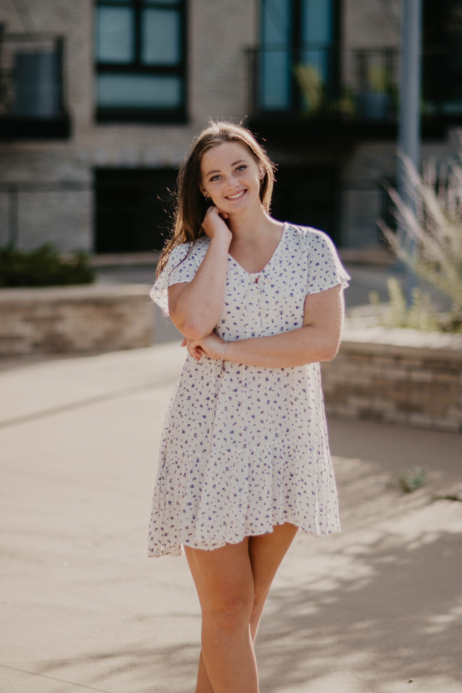

My name is Gianna Freking and I am a senior at Rosemount High School. I have been studying computer science for two years and I plan on continuing computer science in college. I play both basketball and lacrosse, and I am the varsity captain of both sports.
Even from a young age, I have always been intrigued by the ideas and concepts provided to me by the STEM fields. In elementary school, I was apart of FIRST Lego League which I enjoyed so much that I decided to join the robotics team at my high school my freshman year. Another one of my first experiences dealing with Computer Science would be summer camps at Thomson Reuters, which provided me with the basics of Computer Science, which then led me to believe that I would enjoy pursuing it further. On top of that, I also attended technology camps at DCTC which allowed me to explore even more fields of technology such as mechanical engineering and electrical engineering. Moreover, my brother received a Computer Science degree from UW-Madison, and through discussions with him, Computer Science continually felt like something I would enjoy seeking further.
